shot_01
Protozoa (~@)
Exploration of the architectural prototype after the singularity.
As described by prolific scientist and theorist Ray Kurzweil, technological
singularity is defined as a moment in human history where the human
intelligence is artificially enhanced to transverse and transgress into a form of intelligence that is not a direct consequence
of natural evolutionary processes, but rather as manifest destiny, or artificial intelligence.
Kurzweil defines this historic moment as a necessity that originates as an outcome of our own shortcomings to adapt into
the hyperbolic growth in the speed in which collective technological progress evolves.
It is defined as an intended and designed form of human evolution,
both cognitive and material, defined by our own lack of understanding and ability to comprehend the tools that we create
for our own existence due to our stagnant and slow biological progress. Yet it is bound to become the
foremost medium in which we will re-calibrate the relationship between humans, technology and nature.
Such proposition has its precedent in our understanding of the
self-organizing, or intelligent, properties of natural systems. Our analytical models of self-organizing, self generating and
self evolving systems are based on the mathematical abstractions we created to translate these systems into media that we
can comprehend, communicate and eventually materialize.
The objective of this project is to create a coherent architectural prototype that will act as a formal vessel to fulfill a number fo idealized conditions related to hierarchy, structure, program and other architectural criteria after the singularity.
The end goal is to create an architectural system that can later on be tailored toward a particular context or problem, allowing the system to “self generate” based on varying parameters.
Terminology used to accompany this process:
Morphogenesis, Morphodynamics, Self Organizing Systems, Smart/dumb Agent Based Systems, Iterative protocols, Behavioral Patterns: flocks, swarms, Attraction and Diffusion Systems, Strange Attractors (Lorentz and Clifford), Sarcomere Organizations, Frei Otto Wool Pattern, Emergence, Algorithmic and generative Systems
A technical visualisation can be viewed here
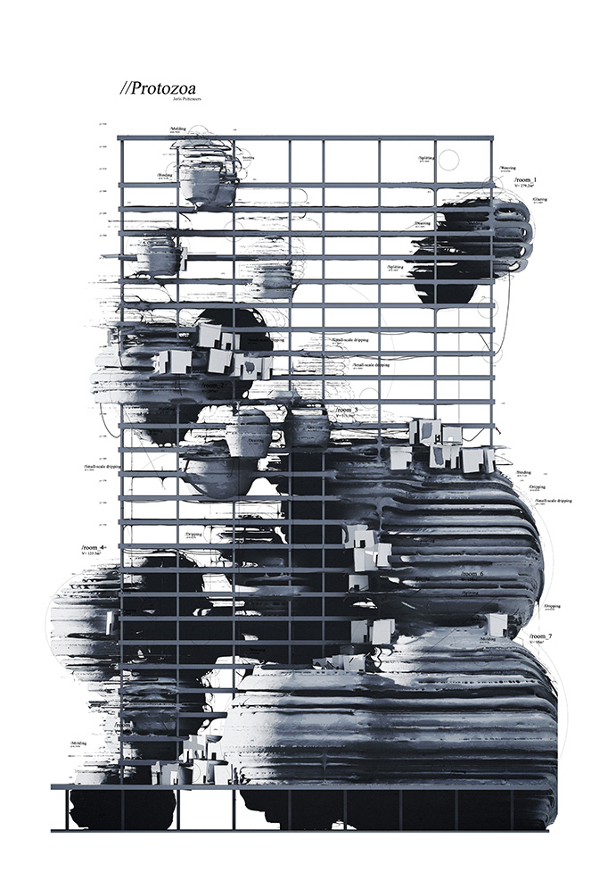
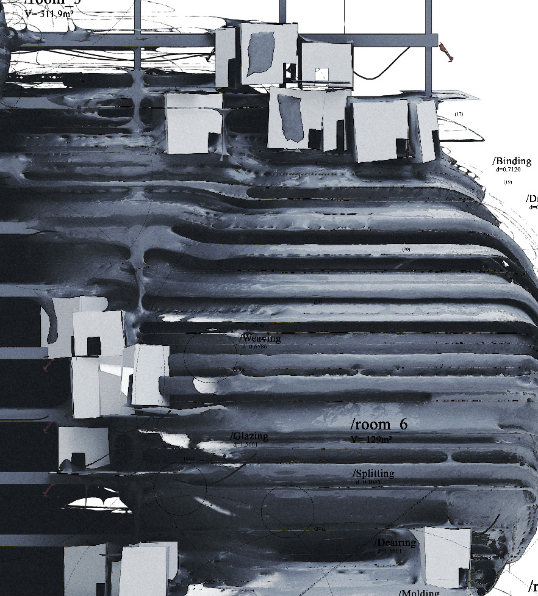
shot_01 detail
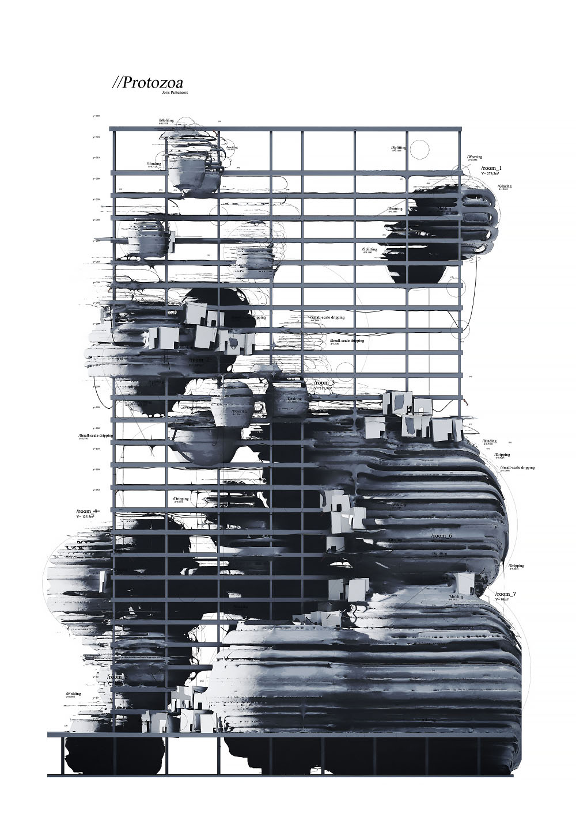
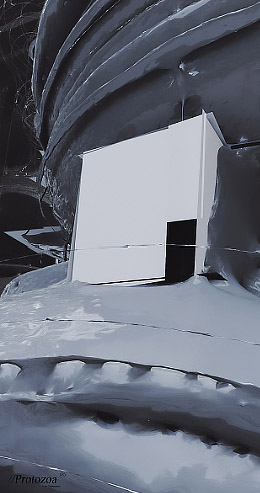
shot_02
shot_03
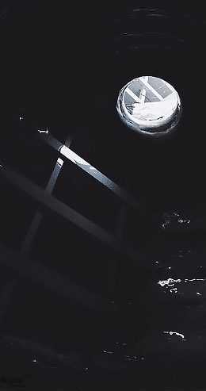
shot_04
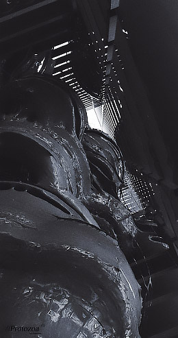
shot_05
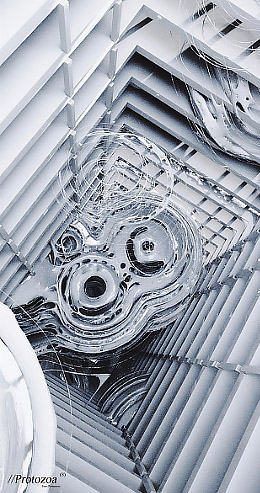
shot_06
shot_07
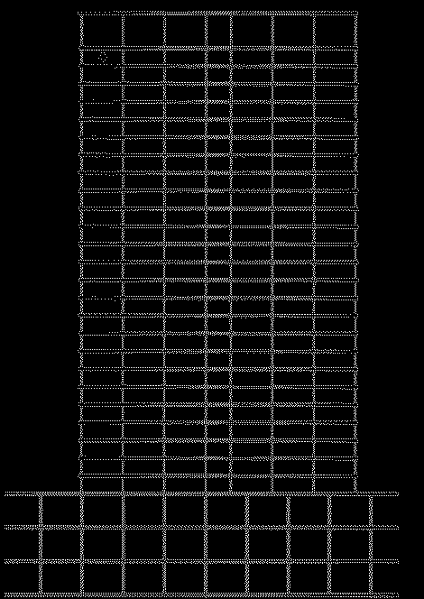
shot_08

shot_09
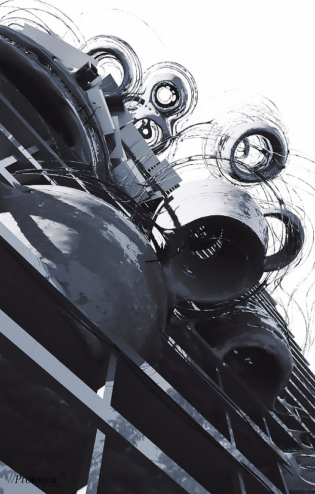
shot_10
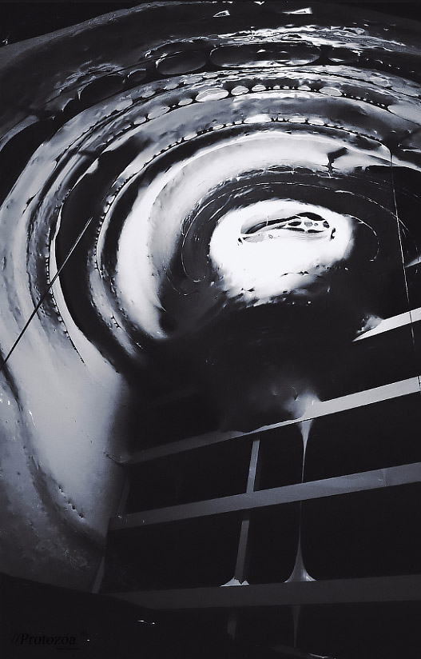
shot_11
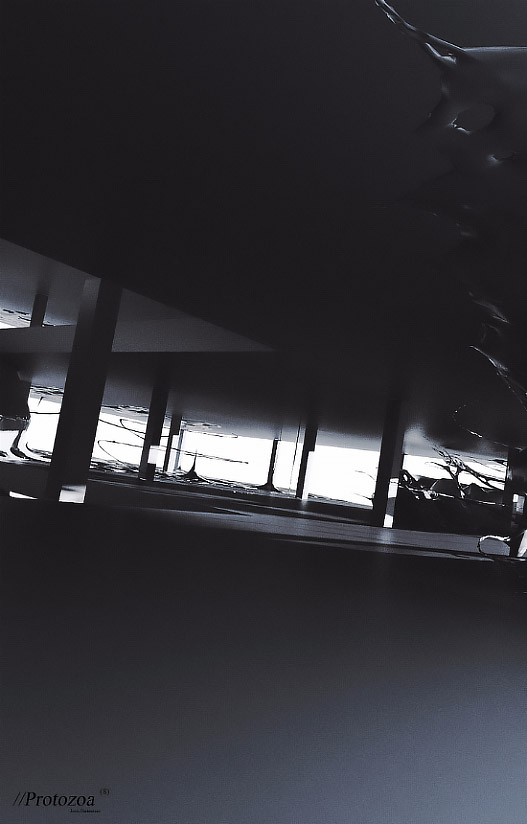
shot_12